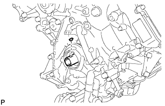
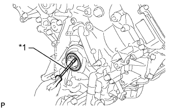

FRONT CRANKSHAFT OIL SEAL > REMOVAL |
| 1. REMOVE RADIATOR ASSEMBLY |
Remove the radiator assembly (Click here).
| 2. REMOVE CRANKSHAFT PULLEY |
 |
Using SST, remove the crankshaft pulley set bolt.
| *a | Hold |
 | Turn |
Temporarily install the pulley set bolt to the crankshaft until 2 or 3 threads are engaged.
 |
Using the pulley set bolt and SST, remove the crankshaft pulley.
| *a | Hold |
| Turn |
| 3. REMOVE CRANKSHAFT TIMING GEAR KEY |
|  |
Remove the crankshaft timing gear key from the crankshaft.
| 4. REMOVE FRONT CRANKSHAFT OIL SEAL |
|  |
Using a screwdriver, pry out the front crankshaft oil seal.
| *1 | Protective Tape |